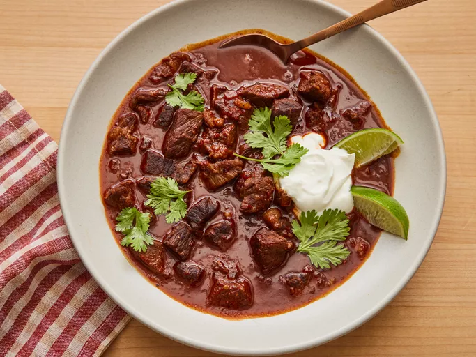

Home
Texas Chili

This Texas chili is a rich and hearty with the enough temperature, a beef that is wonderfully tender and perfect for absorb the pepper and spices seasoning
Ingredients
- 2 ounces (56 g) of dried chile peppers (such as pastilla, guajillo, New Mexico chiles, and California chiles).
- 4 cups of hot water.
- 1 tablespoon finely chopped chipotle pepper in adobo sauce (about 2 peppers).
- 1 tablespoon of canola oil.
- 4 lbs (1.81 kg) of boneless beef chuck roast, trimmed of excess fat, cut into 3/4-inch (2 cm) cubes.
- 2 teaspoons of kosher salt.
- 1 teaspoon of freshly ground black pepper.
- 1 small chopped yellow onion.
- 3 garlic cloves, minced.
- 1 teaspoon of ground cumin.
- 1/8 teaspoon of ground cinnamon.
- 1 1/2 cups of water, divided
- 2 tablespoons of masa harina
- 4 cups of beef stock
- 2 bay leaves
- 1 tablespoon white vinegar
- 1 tablespoon dark brown sugar
- sour cream for serving, to taste
- 1 lime, cut into wedged for serving
Steps
- Gather all ingredients
- Place peppers in a large skillet and heat over medium-low heat; cook, turning once, until it's lightly toasted and fragrant, 2 to 3 minutes per side. Transfer chiles to a bowl and cover it with hot water; let it rest for 30 minutes.
- Drain chiles, reserving about 172 cup fo the soaking water. Use a paring knife to slice open each pepper, and remove and discard stems and seeds by running under a gentle stream of tap water
- Combine chiles, chipotle pepper, and reserved 1/2 cup water in a blender; blend until a smooth paste forms, 15 to 30 seconds. Set aside.
- Heat oil in a Dutch oven over medium-high heat. Toss beef cubes in a large bowl with salt and pepper until evenly coated. Add half of the beef to the Dutch oven and cook, stirring occasionally to brown most sides, about 3 minutes per side. Transfer to a large plate. Repeat with remaining beef.
- Add onions and garlic to drippings in Dutch oven and cook, stirring constantly, until soft and translucent, 3 to 4 minutes. Add cumin and cinnamon, and cook, stirring constantly, until darkened and fragrant, about 1 minute.
- Add blended chili paste and cook, stirring constantly, for 1 minute.
- Add 1/4 cup of the water and masa harina, whisking until incorporated to avoid lumps. Add stock and remaining 1 1/4 cups water and stir to combine
- Add bay leaves and reserved beef and bring to a simmer over medium-high. Reduce heat to maintain a very low simmer and cook, partially covered, stirring occasionally, until liquid is thickened, about 2 hours. Stir in brown sugar and vinegar.
- Remove from heat and let stand of 20 minutes before serving warm with sour cream and lime wedges.
Credits
This recipe and image do not belong to me. All credits goes to: